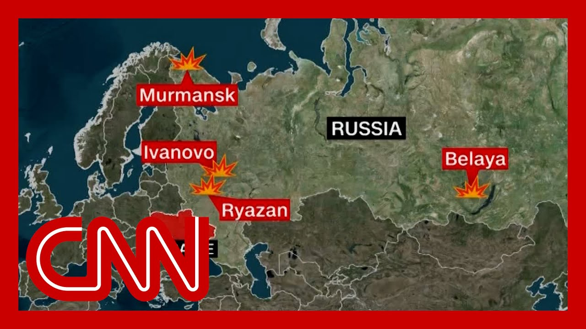

【“有点像特洛伊木马”：北约前指挥官对乌克兰深入俄罗斯境内的无人机袭击作出反应】
Summary: Ukrainian forces conducted a daring long-range drone strike on Russian airbases, damaging strategic bombers and boosting morale ahead of peace talks in Istanbul.
摘要： 乌克兰军队对俄罗斯空军基地发动了一次大胆的远程无人机袭击，破坏了战略轰炸机，并在伊斯坦布尔和平谈判前提升了士气。

⏱️ Estimated Reading Time: 17 min
Ukrainian and Russian delegations are in Istanbul for peace talks.
乌克兰和俄罗斯代表团正在伊斯坦布尔进行和平谈判。
The real story, though, this unprecedented and audacious drone attack by Ukraine on Russian airfields and bombers.
然而，真正引人注目的是乌克兰对俄罗斯机场和轰炸机发动的这次前所未有的、大胆的无人机袭击。
Ukraine attack bases deep inside Russia, thousands of miles from the front lines in what they're calling Operation Spider Web.
乌克兰袭击了深入俄罗斯境内、距离前线数千英里的基地，他们称之为“蜘蛛网行动”。
Ukrainian officials said that dozens of Russian warplanes were destroyed.
乌克兰官员称，数十架俄罗斯战机被摧毁。
Let's get right to CNN chief international correspondent Nick Paton Walsh.
让我们直接连线CNN首席国际记者尼克·帕顿·沃尔什。
This is quite a backdrop for these talks, which take place shortly.
这对即将举行的谈判来说是一个相当引人注目的背景。
Yeah, I mean, absolutely startling the sophistication of this raid.
是的，这次袭击的精密程度绝对令人震惊。
One of these air bases hit almost halfway across Siberia.
其中一个空军基地位于西伯利亚几乎正中间的位置。
The Ukrainian security service able to use mobile wooden homes, essentially, the rooves of them seem to have opened up and allow these clouds of drones remotely piloted to target some of Russia's most important long range strategic bombers, 41 damaged, according to Ukraine's security service.
乌克兰安全部门能够使用移动木屋，其屋顶似乎可以打开，释放出由远程操控的无人机群，瞄准俄罗斯一些最重要的远程战略轰炸机。据乌克兰安全部门称，41架轰炸机受损。
air bases.
空军基地。
That must have thought they were basically far enough away to be impregnable.
这些基地可能曾认为它们距离足够远，坚不可摧。
Ukraine very keen to announce that all the people involved in this year and a half long operation have since left the country.
乌克兰非常急切地宣布，参与这次长达一年半行动的所有人员已经离开该国。
And yet another sign of how Ukraine's able to use its outsize use of technology to inflict significant damage on Russia's enormous military, something which, frankly, Kiev has always felt would be impregnable but is increasingly showing its vulnerability over time.
这再次表明，乌克兰如何能够利用其超常的技术能力对俄罗斯庞大的军队造成重大打击。坦白说，基辅一直认为俄罗斯军队坚不可摧，但随着时间的推移，其脆弱性日益显现。
What does this mean?
这意味着什么？
We don't know exactly what damage it's going to do to the nightly horrors inflicted on Ukrainian civilians by these long range bombers.
我们尚不清楚这次袭击会对这些远程轰炸机每晚给乌克兰平民带来的恐怖造成多大影响。
Some of them, indeed were old enough.
其中一些轰炸机确实相当老旧。
They were still using propellers, but it's another sign the Ukraine is able to sometimes upset the balance.
它们仍在使用螺旋桨，但这也是乌克兰有时能够打破平衡的另一个迹象。
And as you mentioned, to a remarkable backdrop for these talks in Istanbul, here's what Ukraine's President, Volodymyr Zelensky, at a NATO summit in Vilnius state had to say.
正如你所提到的，在伊斯坦布尔谈判这一引人注目的背景下，乌克兰总统弗拉基米尔·泽连斯基在维尔纽斯的北约峰会上发表了以下讲话。
Europe, together with America, has better weapons than Russia.
欧洲与美国一起拥有比俄罗斯更好的武器。
We also have stronger tactical solutions.
我们还有更强的战术解决方案。
Our Operation Spider Web yesterday proved that Russia must feel what its losses mean.
我们昨天的“蜘蛛网行动”证明，俄罗斯必须感受到其损失的意义。
That is what will push it toward diplomacy.
这将推动它走向外交途径。
And when Russia takes losses in this war, it's obvious to everyone that Ukraine is the one holding the line not just for itself, but for all of Europe.
当俄罗斯在这场战争中遭受损失时，所有人都清楚，乌克兰不仅在为自己坚守防线，也在为整个欧洲坚守。
You could see in his arrival in Vilnius, Zelensky, there was a bit of a spring in his step.
你可以看到，泽连斯基抵达维尔纽斯时，步伐中带着一丝轻快。
Frankly, a long, needed boost to Ukrainian morale suffered so badly after that oval Office blow up with President Donald Trump.
坦白说，这是乌克兰士气急需的一次提振，此前与特朗普总统在白宫的冲突让乌克兰士气严重受挫。
Does this change Russia's thinking?
这会改变俄罗斯的想法吗？
Well, many felt these peace talks in Istanbul were another example of Moscow's slow rolling, a peace process that had very minimal interest in seeing lead to a ceasefire.
许多人认为，伊斯坦布尔的和平谈判是莫斯科拖延战术的又一个例子，他们对推动停火几乎没有兴趣。
But it may make the Kremlin begin to wonder if surprises like this come along frequently enough, how long they can sustain this conflict, and maybe it will do practical damage to their war effort.
但这可能会让克里姆林宫开始思考，如果类似这样的突袭频繁发生，他们还能维持这场冲突多久，也许这会对他们的战争努力造成实际损害。
Two.
二。
John.
约翰。
So a remarkable weekend, I should point out, to a record number of drones launched by Russia over the weekend, and a startling number taken out by Ukraine's Electronic Warfare two.
这个周末非同寻常，俄罗斯在周末发射了创纪录数量的无人机，而乌克兰的电子战系统击落了惊人的数量。
So technology increasingly on Ukraine's side.
因此，技术越来越站在乌克兰一边。
Yeah, Ukraine very much trying to increase the costs on Russia and what impact that could have on discussions going forward.
是的，乌克兰非常努力地增加俄罗斯的代价，这可能会对未来的讨论产生影响。
Nick Paton Walsh for us.
尼克·帕顿·沃尔什为我们报道。
Thank you Nick.
谢谢你，尼克。
Let's get more now on these major developments.
现在让我们进一步了解这些重大进展。
With us now is Admiral James Stavridis.
现在与我们在一起的是詹姆斯·斯塔夫里迪斯上将。
He is a CNN senior military analyst and former NATO's Supreme Allied commander.
他是CNN的高级军事分析师，曾任北约盟军最高指挥官。
Also, CNN senior political commentator and former congressman Adam Kinzinger.
还有CNN的高级政治评论员、前国会议员亚当·金辛格。
He's also a former member of the House Armed Services and Foreign Affairs Committee and served in the Air National Guard.
他曾是众议院军事委员会和外交事务委员会的成员，并在空军国民警卫队服役。
Good to see both of you.
很高兴见到你们两位。
Thank you so much.
非常感谢。
Congressman.
国会议员。
You first.
你先请。
do you think this is a game changer or of some other significance that Ukraine could pull this off?
你认为乌克兰能够做到这一点是游戏规则的改变者，还是有其他重要意义？
Yeah, this I mean, look, this is a huge deal.
是的，我是说，看，这是一件大事。
This is I would actually say this is right there with when Ukraine had their very successful counter-offensive.
实际上，我认为这与乌克兰那次非常成功的反攻处于同一级别。
Keep in mind, we've recently had, you know, the United States say that Ukraine doesn't hold any cards.
请记住，我们最近听到美国说乌克兰没有任何筹码。
This is cards.
这就是筹码。
This is a serious amount of cards, by the way, potentially taking out a third of Russia's bomber force is what what this could potentially be is a like no other.
顺便说一句，这是大量的筹码，可能摧毁俄罗斯三分之一的轰炸机力量，这是前所未有的。
And keep in mind, Ukraine is actually winning this war as a defending country.
请记住，乌克兰作为一个防御国家实际上正在赢得这场战争。
All you have to do to win is keep defending until the attacker runs out of combat power at the beginning of the full scale invasion.
要赢得胜利，你只需要继续防守，直到全面入侵开始时攻击者耗尽战斗力。
Russia occupied 30% of Ukraine.
俄罗斯占领了乌克兰30%的领土。
Today it's 18%.
今天是18%。
They've lost a million men casualties in that process, and now potentially a third of their bomber force.
在这个过程中，他们损失了一百万人员伤亡，现在可能还有三分之一的轰炸机力量。
This is a really big deal potentially going into negotiations.
这对即将进行的谈判来说可能是一件非常重要的事情。
And keep in mind, up until this point, Russia has been attacking indiscriminately civilian targets in Ukraine.
请记住，到目前为止，俄罗斯一直在无差别攻击乌克兰的民用目标。
All week, all month, and frankly, the entire war.
整个星期，整个月，坦白说，整个战争期间都是如此。
So, Admiral, what does this say about Ukraine's.
那么，上将，这说明乌克兰的什么？
Is it heightened intelligence gathering or is it a new directive or strategy?
是情报收集能力的提升，还是新的指令或战略？
It's all the above, and I'll add a couple.
以上都是，我还要补充几点。
It is a clever, clever tactic.
这是一种非常聪明的战术。
What they did was put these drone phones, quad copter drones into trucks.
他们所做的是将这些无人机、四旋翼无人机装入卡车。
They got them deep inside Russia.
他们将这些无人机深入俄罗斯境内。
A way to think about these strikes.
可以这样理解这些袭击。
This would be like, launching from Washington, D.C. and attacking targets in Los Angeles.
这就像从华盛顿特区发射，攻击洛杉矶的目标。
I mean, this is Russia is a huge country, largest in the world.
我是说，俄罗斯是一个巨大的国家，世界上最大的国家。
These strikes are at distance exactly as, Congressman and by the way, you looked out is most important credential for this conversation.
这些袭击的距离非常远，正如国会议员所说，顺便说一句，你作为空军飞行员的背景是这次对话最重要的资质。
He's an Air Force pilot, so he really understands the air distance equation and how remarkable this is.
他是一名空军飞行员，因此他真正理解空中距离的方程式以及这次袭击有多么了不起。
So Fred put together that unmanned technology, the intelligence of the locations and the military savvy to load it on trucks, get it across this vast country, launch it at scale and at distance.
因此，弗雷德将无人技术、位置情报和军事智慧结合起来，将它们装上卡车，穿越这个广阔的国家，大规模、远距离地发射。
I think it's a remarkable strike.
我认为这是一次非凡的袭击。
I'm Greek American, so I've got to give you this.
我是希腊裔美国人，所以我必须告诉你这一点。
It's kind of the Trojan horse.
这有点像特洛伊木马。
It's this wooden, these wooden crates.
就是这些木箱。
They got pushed into the country and suddenly sprouting forth from it.
它们被推入该国，然后突然从中释放出这些战士。
Are these warriors destroying all of these planes?
这些战士摧毁了所有这些飞机吗？
None of them human beings.
其中没有一个是人类。
It's it's really quite a remarkable military feat.
这确实是一项非凡的军事壮举。
So then, Congressman, clearly, Ukraine is likely preparing for some sort of retaliate.
那么，国会议员，显然，乌克兰可能正在准备某种报复行动。
But at the same time, what does this kind of successful, you know, attack from their standpoint due to the morale for Ukrainian fighters?
但与此同时，从他们的角度来看，这种成功的袭击对乌克兰战士的士气有什么影响？
This is huge for Ukrainian morale.
这对乌克兰的士气来说意义重大。
This is devastating for Russian morale.
这对俄罗斯的士气来说是毁灭性的。
Now keep in mind, in this process, you know we're going to see so Ukraine is going to see how Russia responds to this.
现在请记住，在这个过程中，我们将看到乌克兰将看到俄罗斯如何回应。
They've seen how Russia does or does not in this case does not defend their military bases.
他们已经看到俄罗斯在这种情况下如何或是否不保卫他们的军事基地。
And they're going to adjust from that.
他们将据此进行调整。
There may be more likely could be many more attacks like this kind of on the perch ready to go in Russia.
可能会有更多类似的袭击准备在俄罗斯境内发动。
And now all of a sudden, Russia has had to go from defending its air bases and its military stuff, basically within, whatever, 500 or 1000km of the front line to the entire amount of Russia.
现在突然间，俄罗斯不得不从保卫其空军基地和军事设施，基本上在前线500或1000公里范围内，扩大到整个俄罗斯。
And keep in mind, they're already almost out of air defense as it is.
请记住，他们已经几乎耗尽了防空力量。
They've had they had to move almost all their air defenses to Moscow just to defend their parade.
他们不得不将几乎所有防空力量调往莫斯科，仅仅是为了保卫他们的阅兵式。
So this is a big deal.
所以这是一件大事。
And for Americans, it's important to remember this.
对美国人来说，重要的是要记住这一点。
We have a choice.
我们有一个选择。
We can either help Ukraine defend itself.
我们可以帮助乌克兰自卫。
And if we do, we'll have a bit of a say in how Ukraine defends itself.
如果我们这样做，我们将对乌克兰如何自卫有一定发言权。
If we don't, Ukraine's got to do what they can do.
如果我们不这样做，乌克兰将不得不做他们能做的事情。
And again, it's important to keep in mind every one of these targets today was a legitimate under the rule of war, legitimate target for Ukraine to strike.
再次强调，重要的是要记住，今天所有这些目标都是合法的，根据战争规则，乌克兰打击它们是合法的。
What you will see in the Russian response is an attack on schools, on hospitals, on civilian infrastructure, because that's what Russia does.
你将在俄罗斯的回应中看到对学校、医院和民用基础设施的攻击，因为这就是俄罗斯的做法。
Ukraine fights fear.
乌克兰与恐惧作战。
Russia goes after civilians.
俄罗斯针对平民。
And then now, Admiral, all this taking place, you know, on the eve, you know, give or take a few days of, you know, this meeting that is supposed to be taking place in Turkey between Russia and Ukrainian representatives.
那么，上将，所有这些都发生在，你知道，在俄罗斯和乌克兰代表在土耳其举行这次会议的前夕，前后几天。
How might this either change the dynamics, apply more pressure, or might it mean a complete retreat from even having talks like this, meaning Russia retreating?
这可能会如何改变动态，施加更多压力，或者是否意味着甚至完全退出这样的会谈，即俄罗斯退出？
I wouldn't be surprised to see the Russians, put a freeze on things.
我不会对俄罗斯人冻结一切感到惊讶。
On the other hand, more likely they'll try and kind of brazen their way through it and say, we caught, all the people who did this.
另一方面，更有可能的是，他们会试图厚颜无耻地应对，并说，我们抓住了所有参与此事的人。
They'll be a bunch of round up the usual suspect operations.
他们将进行一系列惯常的抓捕行动。
Ukraine, by the way, was very careful to point out that everybody involved in this is already back in Ukraine.
顺便说一句，乌克兰非常谨慎地指出，参与此事的每个人都已回到乌克兰。
So anybody you arrest Russia is wrong.
所以俄罗斯逮捕的任何人都是错误的。
I believe that, frankly.
坦白说，我相信这一点。
and then secondly, again, the innovation on display here, I think is really what you have to focus on.
其次，再次强调，这里展示的创新，我认为才是你必须关注的。
and so I would say the talks probably freeze momentarily, then they'll move forward.
因此，我认为谈判可能会暂时冻结，然后他们会继续前进。
Hey, final thought for you as I watch this, as a former supreme Allied commander of NATO.
嘿，作为北约前盟军最高指挥官，我看完这个后的最后想法。
People ask me a lot, you know, hey, do we really want to take Ukraine into the alliance?
人们经常问我，嘿，我们真的想让乌克兰加入联盟吗？
You know, when this war is over, this is going to be a country manufacturing 2 million, maybe 3 million drones a year.
你知道，当这场战争结束时，这将是一个每年生产200万，甚至300万架无人机的国家。
They'll have the most highly blooded, motivated military force on the continent.
他们将拥有欧洲大陆上最富有经验、最有动力的军事力量。
Do we want them on team NATO?
我们希望他们加入北约团队吗？
Man, I do.
伙计，我希望。
a congressman as admiral was saying, you know, this really is a display of innovation too, in terms of this strategy.
正如上将所说，国会议员，你知道，这确实也是这种战略创新的展示。
How do you think that will land with President Trump, who, you know, has not been completely supportive of Ukraine, if you want to put it that way, you know.
你认为这将如何影响特朗普总统，你知道，如果你愿意这么说的话，他并不完全支持乌克兰。
And he is claimed however, he was disappointed though in the behavior of of Putin.
然而，他曾表示对普京的行为感到失望。
But how might this potentially influence.
但这可能会如何影响。
a more definitive point of view coming from the president.
总统更明确的观点。
Well, let me just say I couldn't have said better than what the admiral said about the importance of Ukraine and how they would be an asset to NATO.
嗯，让我这样说，关于乌克兰的重要性以及他们将如何成为北约的资产，上将说得再好不过了。
Look, what does this mean for President Trump?
看，这对特朗普总统意味着什么？
You know, look, I don't know.
你知道，看，我不知道。
He again, he has yet to really attack Putin.
他再次，他还没有真正攻击普京。
I would not be surprised.
我不会感到惊讶。